require(graphics)
plot(co2, ylab = expression("Atmospheric concentration of CO"[2]),
las = 1)
title(main = "co2 data set")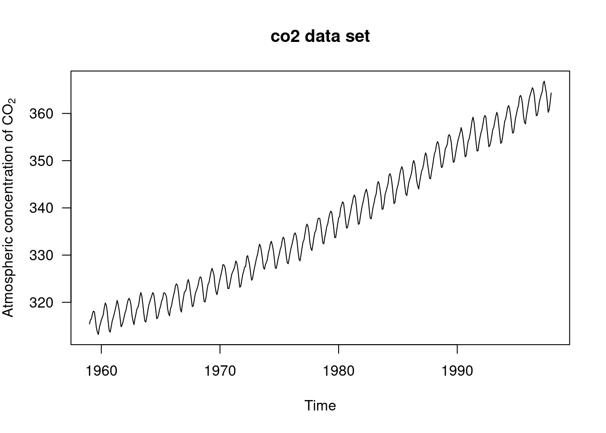
these are some datasets used in the specialization as well as some extras
| File Name | Description | Source |
|---|---|---|
| CO2.csv | Mauna Loa CO2 data set | https://stat.ethz.ch/R-manual/R-devel/library/datasets/html/co2.html |
| nile.csv | The Nile River data set | https://www.rdocumentation.org/packages/datasets/versions/3.6.2/topics/Nile |
| MEDDAYONMARUS.csv | Housing Inventory: Median Days on Market in the United States (MEDDAYONMARUS) | https://fred.stlouisfed.org/series/MEDDAYONMARUS |
| POILWTIUSDM.csv | Global price of WTI Crude (POILWTIUSDM) | https://fred.stlouisfed.org/series/POILWTIUSDM |
require(graphics)
plot(co2, ylab = expression("Atmospheric concentration of CO"[2]),
las = 1)
title(main = "co2 data set")
require(graphics)
plot(Nile, ylab = "Flow (billion cubic meters)",
las = 1)
title(main = "Nile River data set")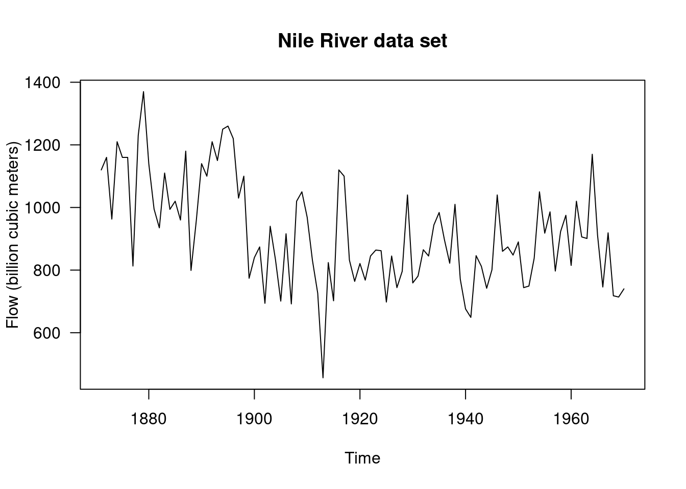
require(stats)
require(graphics)
par(mfrow = c(2, 2))
plot(Nile)
acf(Nile)
pacf(Nile)
ar(Nile) # selects order 2
Call:
ar(x = Nile)
Coefficients:
1 2
0.4081 0.1812
Order selected 2 sigma^2 estimated as 21247cpgram(ar(Nile)$resid)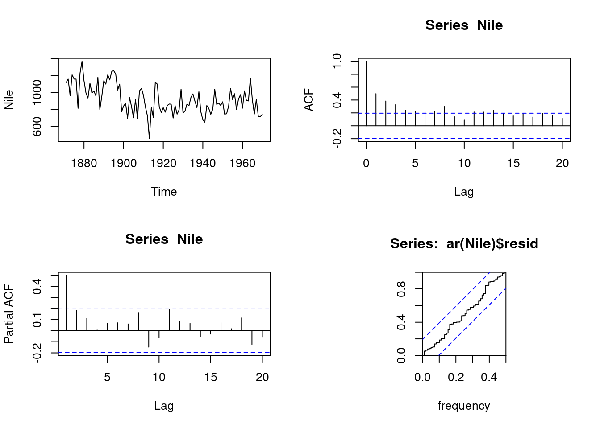
par(mfrow = c(1, 1))
arima(Nile, c(2, 0, 0))
Call:
arima(x = Nile, order = c(2, 0, 0))
Coefficients:
ar1 ar2 intercept
0.4096 0.1987 919.8397
s.e. 0.0974 0.0990 35.6410
sigma^2 estimated as 20291: log likelihood = -637.98, aic = 1283.96## Now consider missing values, following Durbin & Koopman
NileNA <- Nile
NileNA[c(21:40, 61:80)] <- NA
arima(NileNA, c(2, 0, 0))
Call:
arima(x = NileNA, order = c(2, 0, 0))
Coefficients:
ar1 ar2 intercept
0.3622 0.1678 918.3103
s.e. 0.1273 0.1323 39.5037
sigma^2 estimated as 23676: log likelihood = -387.7, aic = 783.41plot(NileNA)
pred <-
predict(arima(window(NileNA, 1871, 1890), c(2, 0, 0)), n.ahead = 20)
lines(pred$pred, lty = 3, col = "red")
lines(pred$pred + 2*pred$se, lty = 2, col = "blue")
lines(pred$pred - 2*pred$se, lty = 2, col = "blue")
pred <-
predict(arima(window(NileNA, 1871, 1930), c(2, 0, 0)), n.ahead = 20)
lines(pred$pred, lty = 3, col = "red")
lines(pred$pred + 2*pred$se, lty = 2, col = "blue")
lines(pred$pred - 2*pred$se, lty = 2, col = "blue")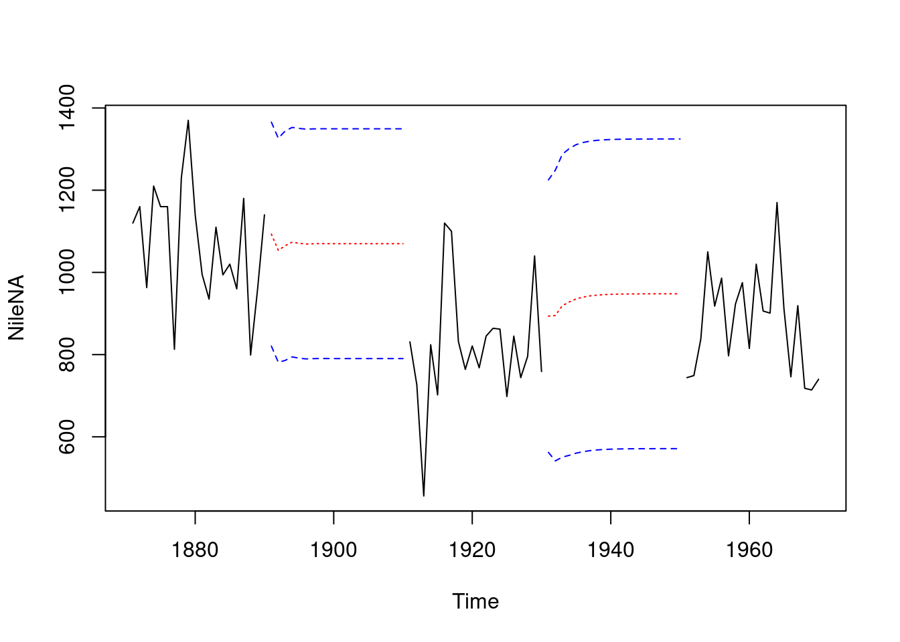
## Structural time series models
par(mfrow = c(3, 1))
plot(Nile)
## local level model
(fit <- StructTS(Nile, type = "level"))
Call:
StructTS(x = Nile, type = "level")
Variances:
level epsilon
1469 15099 lines(fitted(fit), lty = 2) # contemporaneous smoothing
lines(tsSmooth(fit), lty = 2, col = 4) # fixed-interval smoothing
plot(residuals(fit)); abline(h = 0, lty = 3)
## local trend model
(fit2 <- StructTS(Nile, type = "trend")) ## constant trend fitted
Call:
StructTS(x = Nile, type = "trend")
Variances:
level slope epsilon
1427 0 15047 pred <- predict(fit, n.ahead = 30)
## with 50% confidence interval
ts.plot(Nile, pred$pred,
pred$pred + 0.67*pred$se, pred$pred -0.67*pred$se)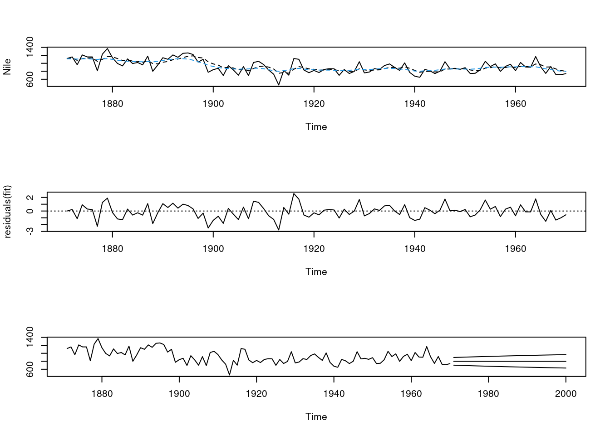
## Now consider missing values
plot(NileNA)
(fit3 <- StructTS(NileNA, type = "level"))
Call:
StructTS(x = NileNA, type = "level")
Variances:
level epsilon
685.8 17899.8 lines(fitted(fit3), lty = 2)
lines(tsSmooth(fit3), lty = 3)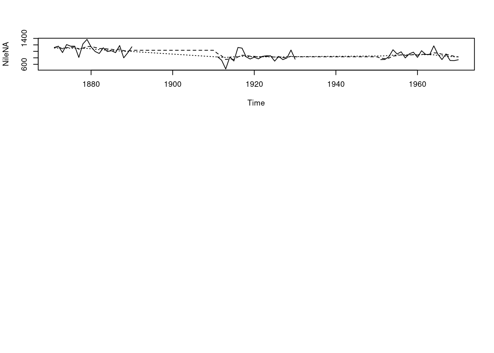
fracdiff packagelibrary(longmemo)
# Load the Nile data:
library(graphics)
nile <- Nile
## fit a model to the Nile data
#fit <- auto.arima(nile, d=c(0,1), approximation=FALSE, stepwise=FALSE)
#summary(fit)
library(fracdiff)
fit <- fracdiff(nile, nar=1, nma=1)
summary(fit)
Call:
fracdiff(x = nile, nar = 1, nma = 1)
Coefficients:
Estimate Std. Error z value Pr(>|z|)
d 0.19005 0.01684 11.288 <2e-16 ***
ar 0.90474 0.09397 9.628 <2e-16 ***
ma 0.83657 0.06026 13.882 <2e-16 ***
---
Signif. codes: 0 '***' 0.001 '**' 0.01 '*' 0.05 '.' 0.1 ' ' 1
sigma[eps] = 139.8735
[d.tol = 0.0001221, M = 100, h = 6.713e-06]
Log likelihood: -636.1 ==> AIC = 1280.181 [4 deg.freedom]# View the model summary
summary(fit)
Call:
fracdiff(x = nile, nar = 1, nma = 1)
Coefficients:
Estimate Std. Error z value Pr(>|z|)
d 0.19005 0.01684 11.288 <2e-16 ***
ar 0.90474 0.09397 9.628 <2e-16 ***
ma 0.83657 0.06026 13.882 <2e-16 ***
---
Signif. codes: 0 '***' 0.001 '**' 0.01 '*' 0.05 '.' 0.1 ' ' 1
sigma[eps] = 139.8735
[d.tol = 0.0001221, M = 100, h = 6.713e-06]
Log likelihood: -636.1 ==> AIC = 1280.181 [4 deg.freedom]# Plot the residuals
plot(residuals(fit))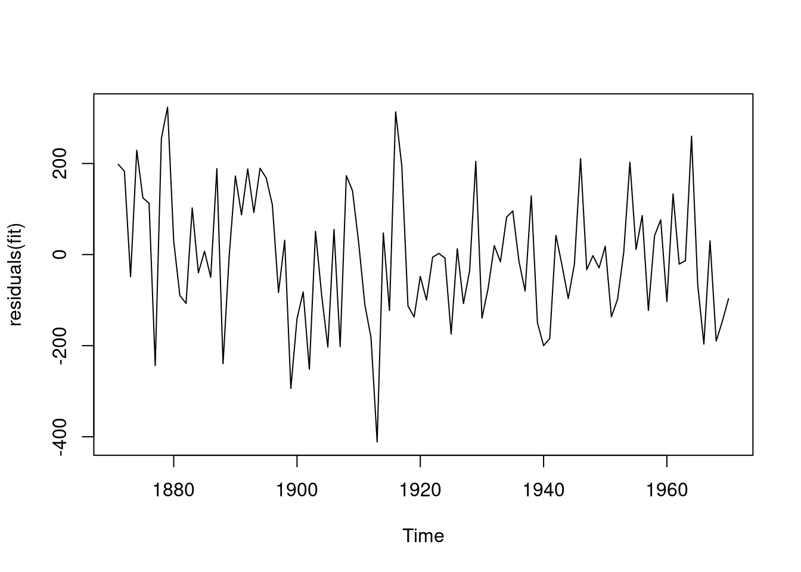
# Check the ACF and PACF of residuals
acf(residuals(fit))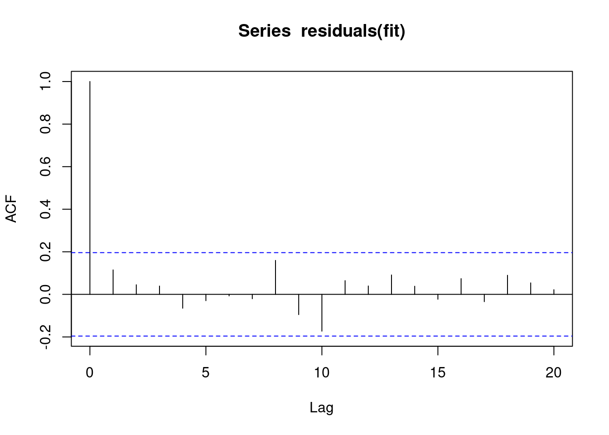
pacf(residuals(fit))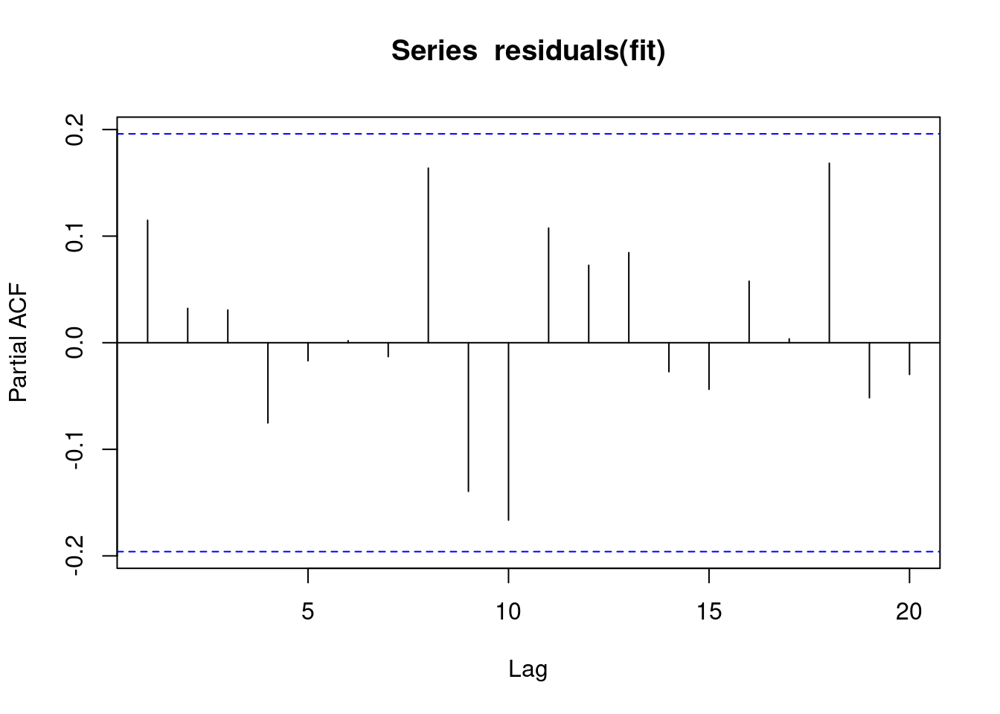
library(forecast)Registered S3 method overwritten by 'quantmod':
method from
as.zoo.data.frame zoo forecast_nile <- forecast(fit, h=20)
plot(forecast_nile)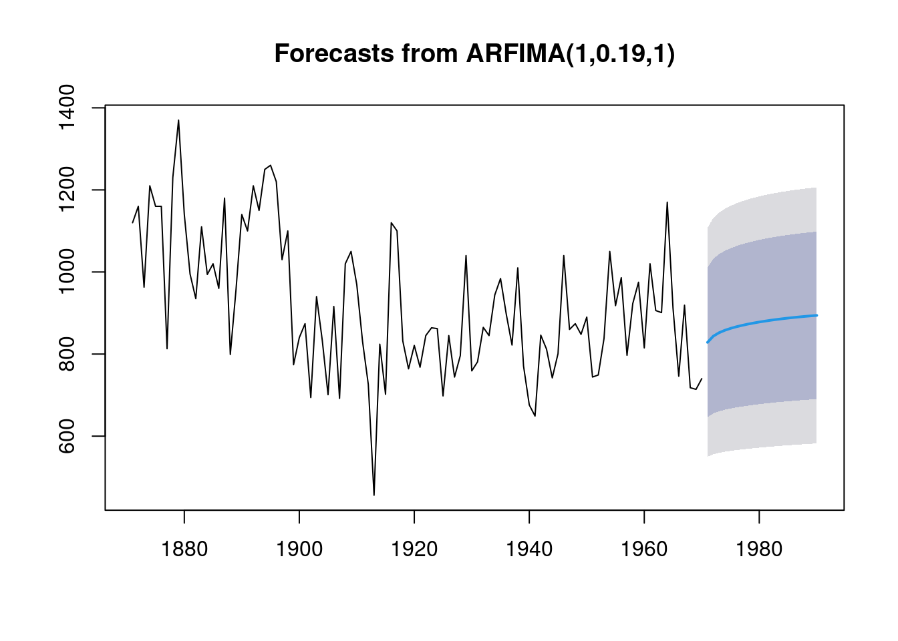
Box.test(residuals(fit), lag=20, type="Ljung-Box")
Box-Ljung test
data: residuals(fit)
X-squared = 13.629, df = 20, p-value = 0.8488forecast packagelibrary(forecast)
# Fit an ARFIMA(p, d, q) model to the Nile data
fit <- arfima(Nile)
# View summary
summary(fit)
Call:
arfima(y = Nile)
Coefficients:
Estimate Std. Error z value Pr(>|z|)
d 3.639e-01 6.705e-06 54274 <2e-16 ***
---
Signif. codes: 0 '***' 0.001 '**' 0.01 '*' 0.05 '.' 0.1 ' ' 1
sigma[eps] = 140.4514
[d.tol = 0.0001221, M = 100, h = 6.722e-06]
Log likelihood: -637 ==> AIC = 1277.914 [2 deg.freedom]# Access coefficients
fit$coefNULL# Plot residuals
plot(residuals(fit))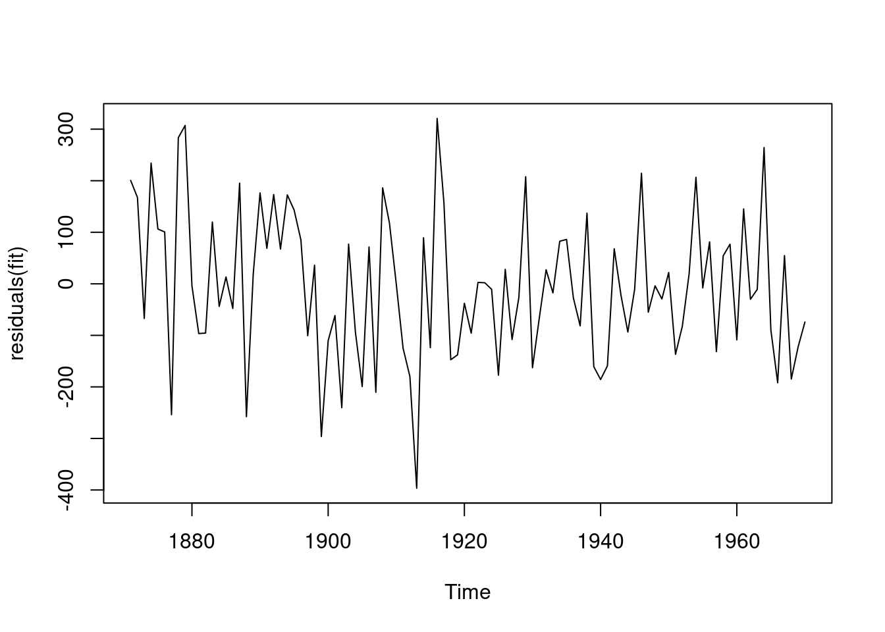
# ACF and PACF of residuals
acf(residuals(fit))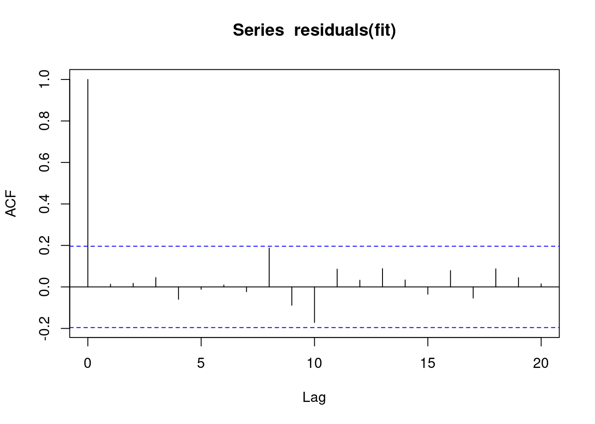
pacf(residuals(fit))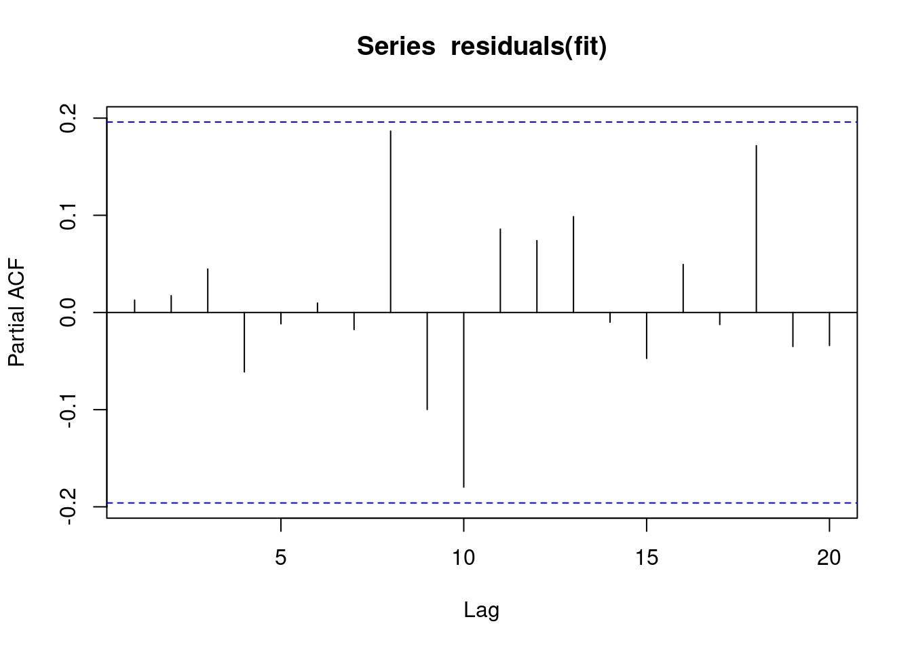
# Forecast
forecast_nile <- forecast(fit, h=20)
plot(forecast_nile)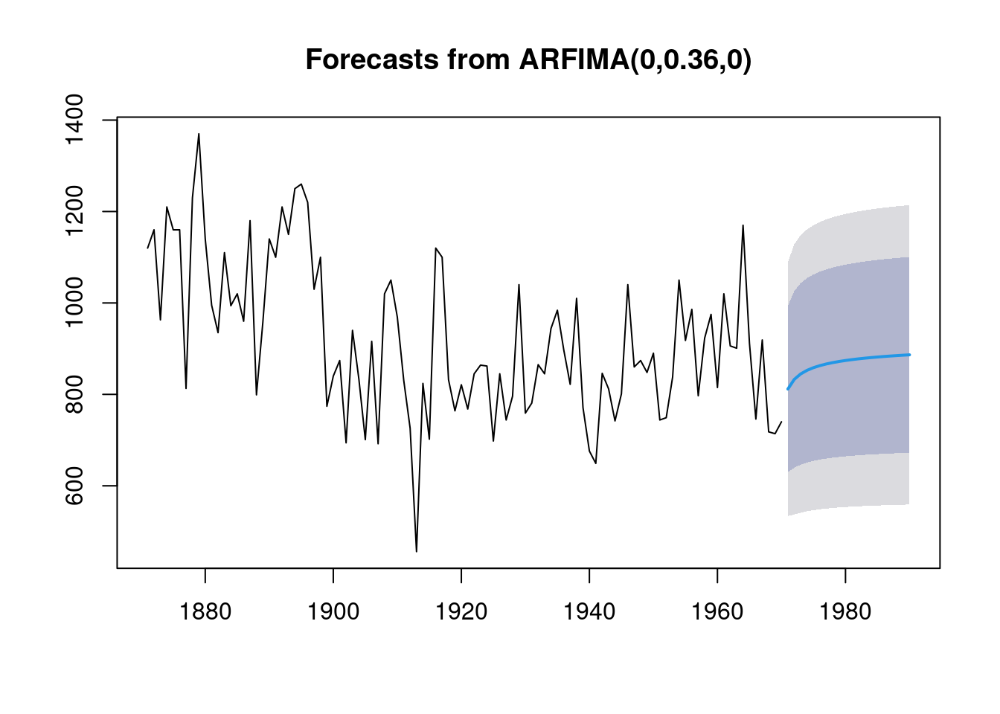
# Ljung-Box test
Box.test(residuals(fit), lag=20, type="Ljung-Box")
Box-Ljung test
data: residuals(fit)
X-squared = 13.326, df = 20, p-value = 0.8629